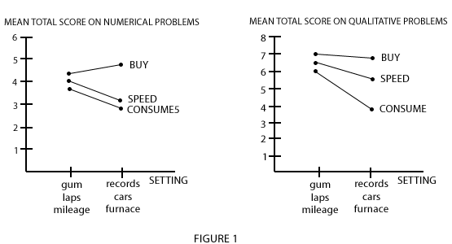

|
|||||||||||||||||||||||||||||||||||||||||||||||||||||||||||||||||||||||||||||||||||||
|
THE
EFFECT OF RATE TYPE, PROBLEM SETTING AND RATIONAL NUMBER ACHIEVEMENT ON
SEVENTH-GRADE STUDENT'S PERFORMANCE ON QUALITATIVE AND NUMERICAL PROPORTIONAL
REASONING PROBLEMS
|
|||||||||||||||||||||||||||||||||||||||||||||||||||||||||||||||||||||||||||||||||||||
|
The Pilot -
|
|||||||||||||||||||||||||||||||||||||||||||||||||||||||||||||||||||||||||||||||||||||
|
ABSTRACT
|
|||||||||||||||||||||||||||||||||||||||||||||||||||||||||||||||||||||||||||||||||||||
|
We are indebted to Nadine Bezuk, Kathleen Cramer and Andrew Ahlgren who assisted in this research. The research was supported in part by the National Science Foundation under Grant No. DPE-847O77. Any opinions, findings, and conclusions expressed are those of the authors and do not necessarily reflect the views of the National Science Foundation. The purpose of this study was to investigate how different rate types and problem settings affect student performance on qualitative and numerical proportional reasoning problems. In addition, relationships between qualitative directional reasoning about rates and numerical proportional reasoning, and relationship between rational number skills and numerical proportional reasoning were explored. The following questions were posed:
Numerous studies have shown that early adolescents and many adults have a great deal of difficulty solving proportional reasoning problems (Hart, 1978, 1981; Karplus, 1981; Karplus et al., 1979; Rupley, 1981; Suarez, 1977; Vergnaud, 1980, 1983). Why is proportional reasoning so difficult? What factors affect problem solving success? Several studies have shown that factors such as problem format, the numerical characteristics of the problems, the problem context, and even the immediately preceding problem affect student performance on proportional reasoning problems (Jesunathadas and Saunders, 1985; Karplus et al., 1984; Lybeck, 1978; Rupley, 1981; Vergnaud, 1980). In this study we investigate the effect of two aspects of problem context on the level of student performance on qualitative and numerical proportional reasoning problems. The intent eventually is to explore the practicality of using a graded series of exercises to lead students from proportions that are fairly easy to understand to those more difficult proportions essential to the sciences (e.g., density, acceleration, concentration, definite proportions, genetics, etc.) and to more advanced mathematical applications, i.e., algebra. Several studies have shown that student performance on proportional reasoning problems is affected greatly by the problem context (Karplus et al., 1983; Lybeck, 1978; Vergnaud, 1980). Jesunathadas and Saunders (1985) found that familiarity with the content of proportional reasoning tasks affected ninth-grade students' performance on these tasks. Students had significantly greater success solving problems with familiar content than solving problems that were the same numerically but with unfamiliar science content. Familiar content was defined as those words, processes, and concepts which most students encounter quite frequently in their daily lives. Unfamiliar science content was defined as those words, processes, and concepts which are found in high school science textbooks. There may be two aspects of "context" that can be usefully distinguished in proportional reasoning problems. The first has three sub-considerations: (a) the objects in the problem, (b) the variables used to describe the two properties of the objects of interest in the problem (e.g., length, area, weight, time, etc.), and (c) the units of measurement used to specify these variables (e.g., for length--inches, feet, centimters, kilometers, miles, etc.). We will call this set of context aspects the "problem setting." For example, in speed problems students may be more familiar with people running foot races and measures of distance run in laps and running time in minutes then they are with driving cars and measures of distance traveled in miles and driving time in hours. A second aspect of context is the type of ratio or rate involved in the problem. A survey indicated eight types of rates that can be found in standard textbook proportional reasoning problems. They are: Distribution (cookies per person), Packing (books per foot on shelf), Exchange (dollars per hour), Mixture (orange juice concentrate and water), Speed (nails hammered per minute), Consume or Produce (miles traveled per gallon), Scale (inches per mile) and Conversion (points per kilogram). Most can be interpreted with direct or continuous variables. Each type of rate can be used in familiar or unfamiliar problem settings. Even with familiar problem settings, however, students may be more or less familiar with the rate types themselves. For example, junior high school students typically have more experience buying or mixing than they have scaling or converting units of measurement. Familiarity with what is called the problem context may consist of familiarity with both the rate type and the problem setting. Knowledge of the hierarchy of difficulty for uninstructed students on proportional reasoning problems with different rate types and problem settings my contribute to a better understanding of how proportional reasoning skills develop in adolescents and to the design of better proportional reasoning instruction for students. Another factor which could affect student performance on proportional reasoning problems is qualitative reasoning skills, which seems to be a significant variable in mathematics and physics problem solving performance (Chi, Feltovich and Glaser, 1981; Larkin and Reif, 1979; Larkin et al., 1980). Some proportional reasoning studies indicate that many early adolescents use faulty qualitative reasoning or use additive comparisons where multiplicative comparisons are required (Karplus and Peterson, 197O; Karplus et al., 1983; Noelting, 1980 a & b). The frequency of these incorrect strategies seems to depend on the problem context (Jesunathadas and Saunders, 1985; Karplus et al., 1983). However, no systematic research has been conducted to explore students' ability to reason qualitatively about rates, to determine the effect of different contexts on their qualitative reasoning about rates, or to determine how qualitative reasoning about rates contributes to proportional reasoning skills. In this study we introduce a new type of qualitative question about rates that may be important in understanding the development of proportional reasoning skills in adolescents. These questions ask in what direction a rate will change (decrease, stay the same, or increase in value) when the numerator and/or the denominator decreases, stays the same, or increases. Such qualitative directional reasoning about rates may be important prerequisite skill for successful performance on numerical proportional reasoning problems. The presence of integral ratios or rates in proportional reasoning problems and small numerical values less than about 30 make problems considerably easier than those without integral ratios or larger numbers (Karplus et al., 1983; Noelting, 1980 a,b; Rupley, 1981). It would seem, then, that rational number skills could be an important prerequisite skill for successful performance on proportional reasoning problems. In this study, we limited our investigation of numerical proportional reasoning to problems with easy, integral ratios or rates. Since we were interested in the effect of rate type and problem setting on problem solving performance, we did not want to add a numerical difficulty interaction effect. We did, however, examine the relationship between rational number skills and performance on numerically easy proportional reasoning problems. Three types of rates were examined in this study: exchange rates (buying), speed, and consumption rates. The two problem settings selected for each rate type were (a) Buying gum and records, (b) Speed - running laps and driving cars, (c) Consumption gas mileage of trucks and oil burning in furnaces. These rate types were chosen because we expected them to have different difficulties and because they have been studied previously (Karplus et al., 1983; Vergnaud, 1983). We expected speed problems to be slightly more difficult than buying problems, and consumption problems to be the most difficult of the three rate types. Numerical Proportional Reasoning Problems
Missing-value and numerical-comparison problems have been used extensively in instruction and research. The inclusion of both types of problems in this study complements previous studies with the same rate types by Karplus et al. (1983) and Vergnaud (1980). The numerical values chosen for each type of problem are contained in Table 1 below.
* V1 and V2 are the two variables in the problem setting (for example, number of pieces of gum and price in cents). Two formats of qualitative directional questions about rates were invented for this study, as illustrated by the questions below:
Since both the numerator and the denominator of a rate can decrease, increase, or remain the same, there are nine qualitative rate change and nine qualitative comparison questions that could be asked. Two oases are ambiguous. Ambiguity occurs when the numerator and denominator both increase, or both decrease. The correct answer to these questions is that there is not enough information to tell what happens to the value of the rate (qualitative rate change) or which object has the larger value of the rate (qualitative comparison), because the numerator and denominator can decrease (or increase) proportionally or non-proportionally. These are the only qualitative questions that require a truly numerical understanding of proportionality for a correct answer.
Our subjects were 254 seventh graders in a middle-class urban school in St. Paul, Minnesota. They included all seventh-grade students in attendance on the day the tests were administered. About half of each group were girls and about half were boys. The teachers reported that the students had not received instruction on proportional reasoning problems in their seventh-grade mathematics classes. The Instruments Six forms of the proportional reasoning test were designed, each comprising 17 questions in a single context, three rate types--two settings within each. The first section of the proportional reasoning test consisted of three missing-value and three numerical-comparison problems. The numerical values in the six problems, shown in Table 1, allow students to solve the problems correctly using integer ratios or rates. The second section of the test contained qualitative questions similar to those already described. One item did not involve proportional reasoning. The second instrument used in the study was a 20-item rational number test. This test consisted of problems on order and equivalence, finding equivalent fractions, qualitative changes in the value of a fraction, operations with fractions, estimating rational number computations, a quantitative notion of a fraction, and the concept of a unit. The test was constructed so as to correspond numerically to the numbers used in the proportional reasoning test. Procedure The tests were administered according to a set of instructions which was read and explained to the students. The six different forms of the proportional reasoning test were randomly distributed to the students in each class. After each student completed the proportional reasoning test, he or she was given the rational number test. ANALYSIS Table 2 contains means and standard deviations for the three rate types, and two settings within each for the numerical (missing value plus numerical comparison) and for the qualitative problems.
Students were divided into 3 roughly equivalent groups on the basis of their scores an the rational number test. Separate 3-way ANOVAS [rational number ability (3 levels), rate type (3 levels), and setting (2 levels)] were conducted for, students' numerical and quantitative scores. Significant main effects for rational number ability and rate type were significant (p < .001) for both types of scores. Setting was significant only for the qualitative score. No significant two- or three-way interactions were observed. Figure 1 depicts the plot of the mean scores for each rate type and setting within each rate type.  As expected, the less familiar rate (consumption) was more difficult for both the numerical and qualitative scales. Correlations between the numerical (missing value plus numerical comparisons) and qualitative subscales scores on the proportional reasoning test and achievement on the rational number test were r = .49 and r = .35, respectively. Although these were significant at the .00001 level, the small percentages or variance accounted for, .24 and .12 respectively suggests that, in the latter case, students do not perceive that rational number concepts and the proportional reasoning skills measured by these tests are in fact highly related to one another. There were very substantial achievement differences on various test items. The range was 5 to 92 percent correct. The two most difficult were those qualitative items requiring a determination of the qualitative effect on the overall rates (increase, decrease, stay the same, or impossible to tell) when both the numerator and the denominator increased or decreased. In these two cases the resulting direction of charge is indeterminate. The correct interpretation is, of course, dependent or the rate of change of the numerator and the rate of change of the denominator in relation to one another. Requiring relativistic thinking, these items may in the future provide valuable insight into students' ability to process information in proportional reasoning situations. It should be noted that these two items were not included in the statistical analyses reported here because they did not load on the main factor in a factor analysis which was conducted. Achievement levels on the more/more, less/less items were by far the lowest of all items on both tests. Postscript: The actual study (of which this was the pilot) was completed by The Rational Number Project in the spring/summer of 1985, with over 900 7th and 8th grade students utilizing four different rate types (mixture, speed, scaling, and density), 2 settings for each rate type, and a test of rational number concepts which closely paralleled the proportional reasoning tests. Similiar data for 100 preservice elementary teachers at the University of Minnesota were also included as part or this effort. Results are currently being incorporated into a series of papers. REFERENCES Chi, M. T. H., Foltovich. P.J., & Glaser, R. (1981). Cotegorization and representation of physics problems by experts and novices. Cognitive Science, 5 (2), 121-152. Hart, K. (1978). The understanding of ratio in the secondary school. Mathematics in School. 7 (1), 4-6. Hart, K. (Ed.), (1981). Children's understanding of mathematics (pp. 11-16), London: John Murray. Karplus, P., Karplus, E. F., Formisano, M. & Paulson, A. C. (1979). Proportional reasoning and control of variables in seven countries. In J. Lochhead and J. Clement (Eds.), Cognitive process instruction. Philadelphia: Franklin Institute Press. Karplus, R. & Peterson, R. (1970). Intellectual development beyond elementary school. II: Ratio, a survey. School Science ard Mathematics, 70 (9), 813-820. Karplus, R., Pulos, S., & Stage, E. K. (1981). Proportional reasoning of early adolescents: Comparison and missing value problem in three schools. In C. Comiti and G. Vergnaud (Eds.), Proceedings of the Fifth Conference of the International Group for the Psychology of Mathematics Education. Grenoble: Laboratoire I.M.A.G. Karplus, P., Pulos S., & Stage E. K. (1983). Proportional reasoning of early adolescents. In R. Leah and M. Lardau (Eds.), Acquisition of mathematics concepts and processes. New York: Academic Press. Karplus, R., Pulos. S., & Stage, E. K. (1983). Early adolescents' proportional reasoning on rate problems. Educational Studies in Mathematics, 14, 219-233. Larkin, J. H., McDermott, J., Simon, D. P., & Simon, H. A. (1980). Models of competence in solving physics problems. Cogritive Science, 4. 317-345. Lybeck, L. (1978). Studies of mathematics in teaching of science in Goteborg (No. 72). Goteborg, Sweden: Institute of Education, University of Goteborg. Noelting, G. (1980a). The development of proportional reasoning and the ratio concept: Part I - Differentiation of stages. Educational Studies In Mathematics, 11, 217-253. Noelting, G. (1980b). The development of proportional reasoning and the ratio concept: Part II - Problem structure at successive stages; problem solving strategies and the mechanism of adaptive restructuring. Educational Studies in Mathematics, 11, 331-363. Rupley, W. H. (1981).
The effects of numerical characteristics on the Suarez, A. ( 1977 ). Formales Derken, urd Furktiorsbegriff bei Jugerdlicher. Bern: Hans Huber. Vergnaud, G. (1980). Didactics and acquisition of multiplicative structures in secondary schools. In W. F. Archerhold, R. H. Driver, A. Orton. & C. Wood-Robinson (Eds.), Cognitive development research in science and mathematics. Leeds, England: University of Leeds. Vergnaud, G. (1981). Quelques orientations theoriques et methodologiques des recherches francaises er didactique. Proceedings of the Fifth Conference of the International Group for the Psychology of Mathematics Education. Grenoble: Laboratoire, I.M.A.G. Vergnaud, G. (1983).
Multiplicative structures. In R. Lesh and M. Landau (top) |
|||||||||||||||||||||||||||||||||||||||||||||||||||||||||||||||||||||||||||||||||||||